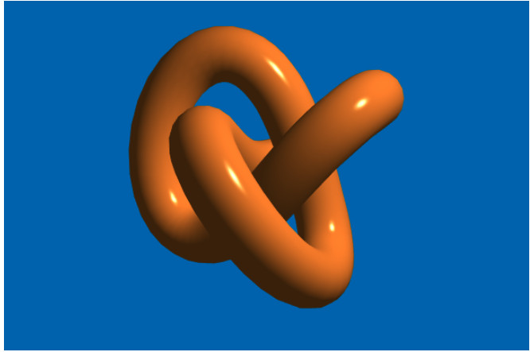
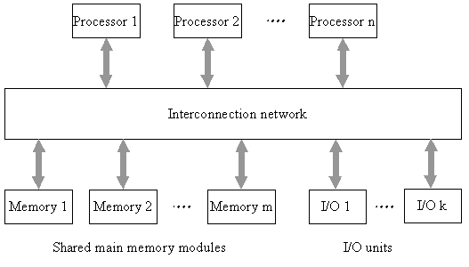
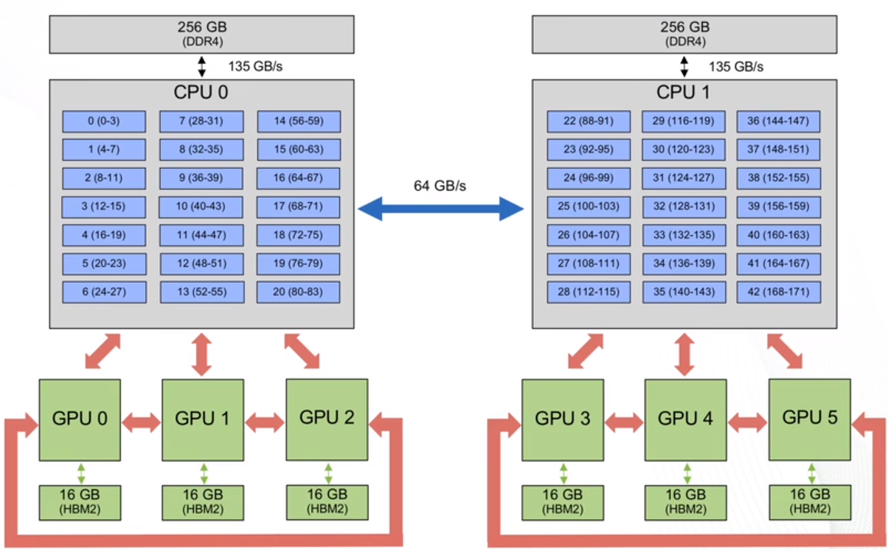

Arhitektura
Veljko Petrović
Novembar, 2025
Arhitektura superračunara
Pregled mogućih rešenja
Veza sa drugim predmetima
- Mi priču o arhitekturi radimo samo pomalo
- Mnogo više verovatno radite na drugim predmetima
- Biće nešto preklapanja
Faktori performanse HPC sistema
- Brzina komponenata
- Koliko se brzo stvari dešavaju na individualnoj komponenti
- Paralelizam komponenata
- Koliko stvari se izvršava jednovremeno
- Koliko stvari se efektno paralelizuje
- Efikasnost komponenata
- Koji procenat vremena je sistem sposoban da radi
Faktori performanse HPC sistema
- \(P\) — performanse sistema kao apstrakcija
- \(e\) — efikasnost sistema
- \(S\) — faktor skaliranja
- \(a\) — funkcija dostupnosti čiji je parametar \(R\) — pouzdanost
- \(\mu\) — stopa izvršavanja instrukcija kao funkcija čiji je parametar \(E\) — snaga
Faktori performanse HPC sistema
\[ P = e \cdot S \cdot a(R) \cdot \mu(E) \]
O pouzdanosti
- Sporiji algoritmi mogu da priušte da budu provereni i sigurno tačni
- Ali ako hoćemo brzinu greške su neminovne
- Sistemi su jednostavno previše komplikovani
“Što više znam o kompjuterima sve sam više iznenađen kada rade”
(Nepoznati FTN student, Hol fakulteta, 2008.)
O pouzdanosti
- Ovaj uvid važi još više za superračunare
- Svi ti delovi, sve te komponente
- Zaista je ponekad iznenađenje kada stvari prorade
Metode pouzdanosti
- Greške nisu kraj sveta
- Pomislite na %TCP% nasuprot %UDP%
- Metod koji se koristi najčešće je %checkpoint/restart%
- Što da ne? Sve što izgubimo je vreme.
- Ako je vreme koje gubimo na povremeni restart manje od vremena koje bi gubili na sporiji algoritam—pobeda!
Flinova taskonomija
- Postoje mnogi načini da se opiše arhitektura paralelnih sistema i mnogi načini da se takvi sistemi projektuju.
- Da bi mogli da pričamo bez previše mahanja rukama i objašnjavanja dobro je da imamo nekakve zajedničke termine
- Primer takvih zajedničkih termina jeste Flinova taksonomija, sistem denotiranja različitih arhitektura koji je napravio Majkl Flin 70-tih kodina prošlog veka.
Faktori Flinove taksonomije
- Flinova taksonomija ima dve dimenzije po kojima varira—podaci i instrukcije, označene u sistemu kao D i I.
- I D i I dimenzije mogu da variraju između dve vrednosti: S %(single)% i M %(multiple)% po tome da li se u jednom trenutku u sistemu izvršava operacija nad više tokova podataka ili se izvršava više niti kontrole
- Kombinatorika nam, onda, daje ‘ćoškove’ faznog prostora HPC
arhitekture:
- SISD
- SIMD
- MIMD
- MISD
%SISD%
- Najklasičnija Fon Nojmanova arhitektura
- Jedna stvar u jednom trenutku
- Ništa danas ne radi ovako, praktično
- No, i dalje je koristan mentalni model pošto vaša userland aplikacija gotovo sigurno radi ovako.
%SIMD%
- Uvek se radi ista stvar
- Ali se istovremeno radi na velikom skupu podataka
- Da bi to razumeli, hajde da razmišljamo o idealizovanoj grafičkoj kartici koja izvršava Fongov model senčenja
SIMD - Fongov model senčenja
\[ I_p = k_{a}i_{a} + \sum_{m \in svetla}(k_{d}(\hat{L}_m\cdot\hat{N})i_{m,d} + k_{s}(\hat{R}_m \cdot \hat{V})^{\alpha}i_{m,s}) \]
SIMD - Fongov model senčenja
attribute vec3 position;
attribute vec3 normal;
uniform mat4 projection, modelview, normalMat;
varying vec3 normalInterp;
varying vec3 vertPos;
void main(){
vec4 vertPos4 = modelview * vec4(position, 1.0);
vertPos = vec3(vertPost4) / vertPos4.w;
normalInterp = vec3(normalMat * vec4(normal, 0.0));
gl_Position = projection * vertPos4;
}SIMD - Fongov model senčenja
precision mediump float;
varying vec3 normalInterp;
varying vec3 vertPos;
uniform float Ka;
uniform float Kd;
uniform float Ks;
uniform float bljestavost;
uniform vec3 ambient;
uniform vec3 diffuse;
uniform vec3 specular;
uniform vec3 lightPos;
//Ovo je verzija sa jednim svetlom
void main(){
vec3 N = normalize(normalInterp);
vec3 L = normalize(lightPos - vertPos);
float lam = max(dot(N, L), 0.0);
//lam je sada Lambertova vrednost
float spec = 0.0;
if(lam > 0){
vec3 R = reflect(-L, N);
vec3 V = normalize(-vertPos);
specUgao = max(dot(R,V), 0.0);
spec = pow(specUgao, bljestavost);
}
gl_FragColor = vec4(Ka * ambient + Kd*lam*difuse + Ks*spec*specular, 1.0);
}Fongovo senčenje

%SPMD%
- U praksi ovo nije baš %% SIMD. %%
- Nije paralelizam baš u instrukcijama
- Ali jeste slučaj da imamo jedan program a više tokova podataka.
- Tako da je moderan %GPU% striktno govoreći primer %SPMD% arhitekture.
- No, sa druge strane, %SPMD% je samo praktična inkarnacija %SIMD% ideje.
- Ne treba se previše držati Flinovih apstrakcija. One su divne da nam opišu “ćoškove” prostora u kome obitavamo, ali kretanje po tom prostoru dozvoljava dosta varijacije.
- Moderan heterogen sistem je takav da ima zapanjujuće mnogo gradacije između stepena deljene memorije, nivoa paralelizma, itd.
Heterogen sistem?
- Koristimo taj termin relativno često
- Programiranje u heterogenim sistemima će biti naš glavni izazov
- Pa šta je heterogen sistem?
- Neformalna definicija: Sistem koji meša razne delove Flinove taksonomije u svojim različitim delovima: hibrid raznih arhitektura i pristupa vođen samo željom za najviše performansi.
- Heterogeni sistemi zvuče vrlo novo i uzbudljivo ali, istina je da su oni već duže vremena sa nama i da vi verovatno imate jedan.
- Lični računari su uvek bili heterogeni, a nikad više nego danas gde je razlika između superračunara i nekog igračkog računara uglavno stvar razmere ne prirode.
%SIMD% nizovi
- %SIMD% niz %% (SIMD Array) %% je tehnika izrade superračunara koja je svoj vrhunac doživela u 80-tim i 90-tim godinama prošlog veka.
- Ideja je da se računar sastoji od jako mnogo prostih procesorskih elemenata kojima upravlja kontroler sekvence koji se stara da rade istu stvar u isto vreme
- Svaki takav element radi, onda, nad svojim komadom memorije uz minimalno povremeno komuniciranje sa memorijom drugih komada memorije.
- Ovo jako liči na %fixed-pipeline% arhitekturu grafičkih kartica ranijih generacija.
Procena performansi i Amdalov zakon
- Amdalov zakon je metod da se proceni performansa paralelizovanog sistema
- Tačnije rečeno, Amdalov zakon povezuje stepen paralelizacije sa ostvarenim dobitkom u performansama.
- Ovo je težak problem, te je zakon samo približni model koji naročito odgovara baš SIMD nizovima.
Amdalov zakon
- Zamislim %SIMD% niz procesor koji ima dva režima izvršavanja:
- Sekvencijalni (gde izvršava funkciju po funkciju)
- Paralelni (gde izvršava sa svim svojim PE-ovima)
- Neka je \(T_0\) ukupno vreme za neki proračun
- A neka je \(T_F\) vreme za
sekvencijalno izvršavanje operacija koje se mogu izvršavati u paraleli,
dok je \(T_A\) vreme koje je zaista
potrebno.
- Dalje, neka je \(g\) stepen paralelizma, \(S\) stepen ubrzanja, a \(f\) proporcija operacija koje se mogu paralelizovati.
- Onda:
Amdalov zakon
\[ T_A = \frac{T_F}{g} \] \[ S = \frac{T_0}{T_A} \] \[ f = \frac{T_F}{T_0} \] \[ T_A = (1 - f)\cdot T_0 + (\frac{f}{g})\cdot T_0 \]
Amdalov zakon
\[ S = \frac{T_0}{(1-f) \cdot T_0 + (\frac{f}{g})\cdot T_0} \] \[ S = \frac{1}{1 - f + (\frac{f}{g})} \]
Amdalov zakon

%MIMD%
- Ovo je svet u kome mi, u stvari, živimo
- No, ponekad, to se krije od nas
- Najčistiji primer ovako nečega jeste sistem čvorova, gde je svaki čvor procesor koji komunicira sa drugim čvorovima preko mreže
- Provešćemo najviše vremena u hibridnom %MIMD/SIMD% svetu
Multiprocesori
- Praktično ovaploćenje %MIMD% pristupa.
- To je arhitektura modernih super-računara. Mnogo čvorova, mnogo procesora.
- Multiprocesorske arhitekture imaju varijacije
Multiprocesori deljene memorije
- Sistem gde imamo \(N\) procesora, deljenu magistralu, i jednu memoriju za sve.
- Idealno, ovo funkcioniše kao %UMA% arhitektura— %% uniform memory access. %% To znači da bilo koji deo memorije je ne samo jednako dostupan bilo kom procesoru, nego je dostupan u jednakom vremenu.
Multiprocesori deljene memorije

Problem keša
- Koherentnost keša je ogroman problem za ovakve arhitekture
- Tipično se koristi %% Modified Exclusive Shared Invalid protokol, %% tkzv. %MESI.%
- Poznat još i kao ‘njuškalo keš’ %% (Snooping cache) %%
- %UMA% je moguća (donekle) na običnom računaru
- Ali današnje mašine su skoro sve %NUMA,% tj. ne %UMA:% neka memorija je blizu a neka daleko. Fizički a i logički.
Masivno paralelni multiprocesori
- MPM-ovi nemaju deljenu memoriju nego distribuiranu memoriju.
- Striktno govoreći (i u stilu toga što su nam sve oznake labave i predstavljaju samo proizvoljne linije povučene po kontinualnim skalama) model distribuirane memorije je samo ekstreman NUMA model.
- Kako?
- Pa čvor ima svoju memoriju koja je NUMA-tično manje-više deljena, ali je povezan sa svim drugim čvorovima preko interfejsa za prosleđivanje poruka koji, tehnički, omogućava pristup (iako jako spor i indirektan) svoj memoriji sistema.
Relativno moderan pristup

Potrošački klasteri
- Potrošački klaster %% (comodity cluster) %% nije toliko posebna arhitektura koliko je specifična implementacija masivno paralelne arhitekture.
- Ideja je da se MPM arhitektura implementira upotrebljavajući hardver koji je namenjen potrošačima
- Zašto ovo radi?
- Ekonomije skale.
- Video igre.
- Naravno rešenje je manje efikasno: vrhunska MPM rešenja su skoro pa 90% efikasna na odabranim problemima.
- Čak i najbolji potrošački klasteri retko probijaju 60%.
- Ali su mnogo jeftiniji i ekonomski se skaliraju fantastično.
Internet-bazirani potrošački klasteri
- Ekstreman primer ovoga jeste ideja da svako ko hoće može da postane deo super-računara koji rešava neki ogroman problem.
- Folding@home, na primer.
- O ovome pričamo na predmetu Računarstvo u Oblaku
- Ovo je slučaj gde je izolovanost čvorova komično velika, ali je to i dalje sasvim OK za određeni tip problema, uglavnom u kategoriji smešno paralelnih (više o tome kasnije).
- Najuspešniji primer je verovatno globalna bitcoin mreža
- Pet miliona triliona proračuna %SHA256% vrednosti svakog sekunda.
%MISD%
- Neki smatraju da je ovo besmislena kategorija
- Isti podaci a više tokova instrukcija?!
- Imaju dve klasične interpretacije:
- %% Coarse-grained pipeline %%
- Deljena memorija
- Na jedan način, moglo bi se reći da će %OpenMP% sa kojim se suočavate uskoro primer %MISD% arhitekture.